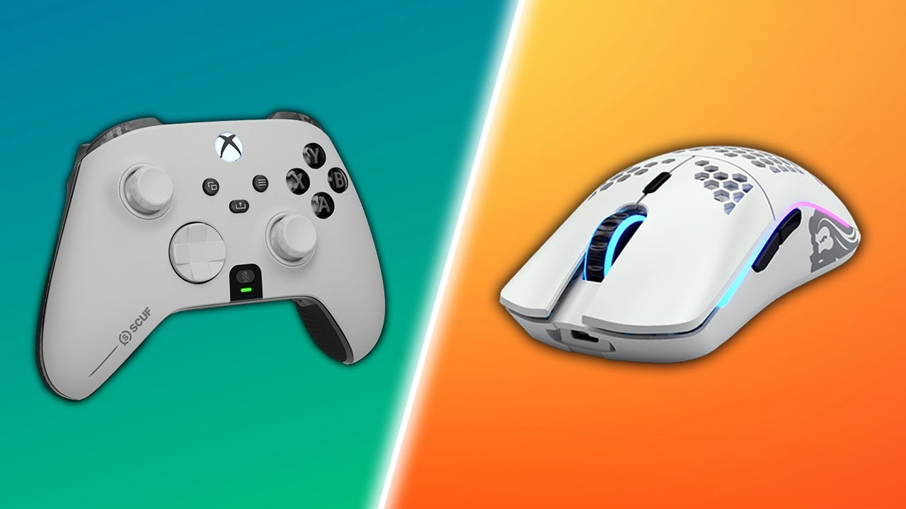
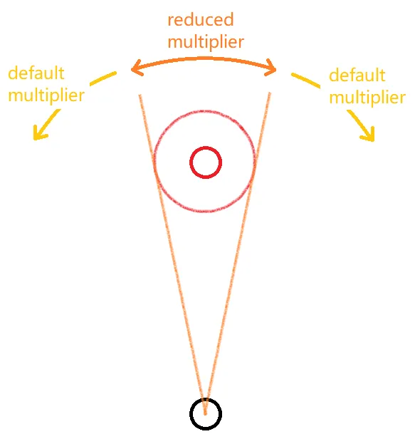
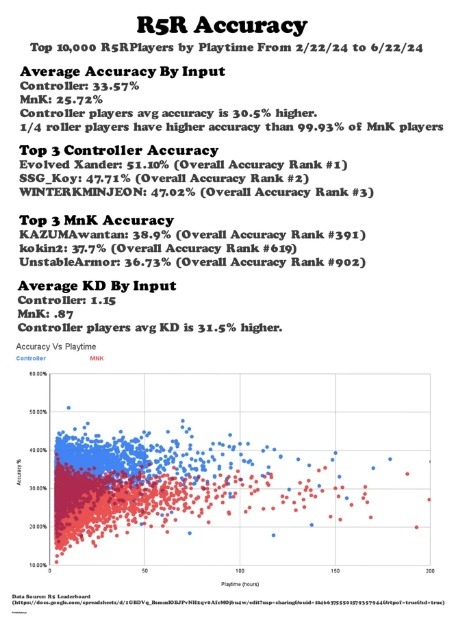
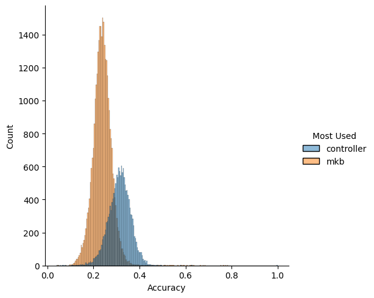
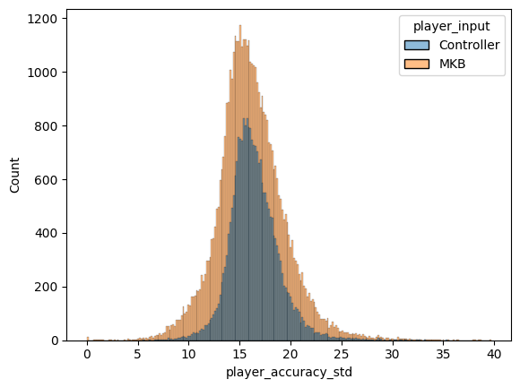
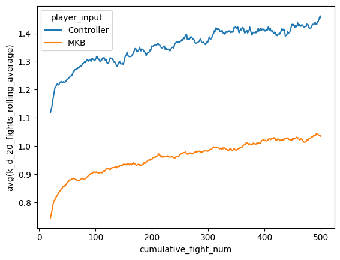
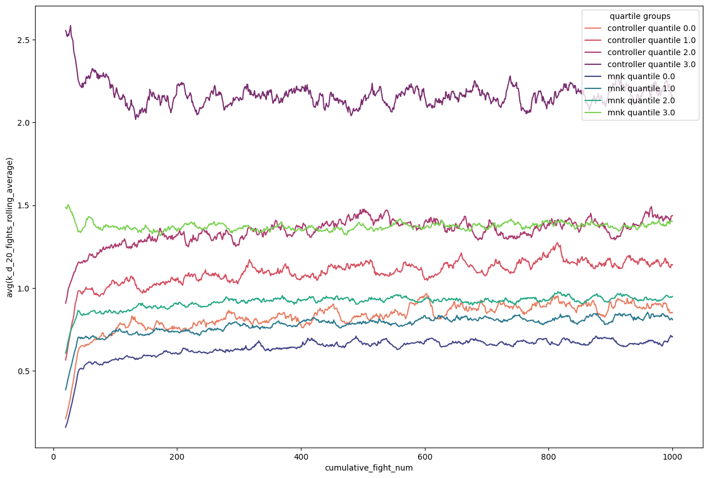
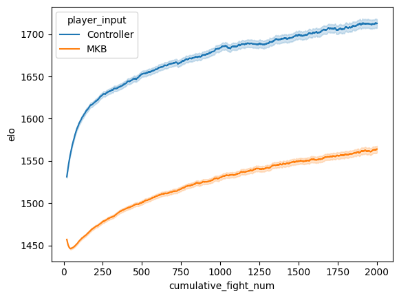
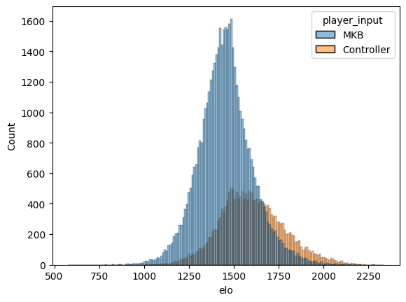

In my free time, I play video games, mostly of the RPG variety: Cyberpunk 2077, God of War, Baldur’s Gate III. Though one competitive one has captured me for the past few years: Apex Legends.
Apex Legends is a first-person shooter battle royale (you shoot guns at other characters until your team is the only one left) with hero shooter elements much like Overwatch. The raw gameplay is some of the best I’ve ever had the chance of playing and more importantly it’s a great excuse to keep up with some of my closest friends. In recent seasons, we’ve played a lot more of the ranked game mode, achieving Masters rank (~top 0.5% of players) in the current season.
Over these seasons, we’ve noticed a trend in the players we’re facing - more and more of them seem to be using controller instead of mouse and keyboard (mnk), the native input for PC gaming. Why might that be?
Primer on Inputs
The main difference between the 2 inputs is how they map physical space onto in game space. Essentially, a mouse detects movement through taking a large series of low resolution images and comparing them against each other. This measurement is further magnified through software defined sensitivity to achieve the movement in game.
In this way, given a surface that lends itself well to image comparison and a high rate of images taken per second, one can map a movement in game from point a to b to a movement in the physical world from point x to y. Given enough training, a player could theoretically learn these mappings and precisely move their mouse to the physical location that maps onto the intended movement in game - there is a 1:1 mapping between physical and in game spaces.
The same is not true for controllers. Each analog stick has in it potentiometers that measure the current running through the circuit. As the analog stick is moved, the resistance of the circuit is changed and in turn the current running through the potentiometers. These changes can be used to measure the exact location of the stick within its range of motion. And therein lies the problem: within its range of motion - unlike the mouse there is a limit to the physical space that the controller can take measurements over. When the controller is fully pushed to one side, that is the maximum signal that the device can send as an input.
Due to this imprecise mapping, it is more difficult for the controller player to achieve accuracy in game. Therefore games often apply a layer of software called aim assist.

In the diagram above, the small red circle represents the enemy player, the larger red circle is an area of interest around the enemy player called the aim bubble.
Aim assist usually works in two ways:
- Reticle slowing
- Rotational aim assist
As the reticle moves into the aim bubble, aim assist will lower the in game sensitvity multiplier, ‘slowing’ the players aim and increasing the chance of the reticle landing on the enemy player. This is known as reticle slowing.
Rotational aim assist in contrast moves the reticle in the direction of the enemy player’s movement when they enter the aim bubble as long as there is some aiming or movement input from the player. In effect ‘dragging’ the reticle towards the enemy.
The strength of these effects are determined on a game to game basis, with some games emphasising one over the other. Within the context of first person shooters, aim assist is often discussed as ‘unfair’, this is mainly due to 2 perceived advantages:
- Rotational aim assist adds input that doesn’t originate from the player
- Both aim assist effects react instantaneously to information.
To expand on the second point, when an enemy player changes their movement direction from left to right, rotational aim assist will immediately start pulling the reticle to the right, this is part of why aim assist makes aiming feel ‘sticky’. This is in contrast to mouse aiming where the reaction time of the player limits the speed at which the aim can adjust. The argument is that this provides the controller player with an advantage that the human body can simply not achieve - in effect mechanic doping.
The Hypothesis
Due to the over-tuned strength of aim assist, controller players have an advantage when compared to mouse and keyboard players. This presents itself in two ways:
- For an individual encounter (defined to be a 1 versus 1 fight) the average controller player has a higher chance of winning compared to the average mnk player
- The learning curve (how quickly one can improve at said encounters) is much steeper for controller players than it is for mnk players
In other words, the controller player not only gets to a better place, they get there faster.
Dataset
Due to there being no public API for Apex Legends, I’ve had to look for alternative data sources for this analysis. Fortunately, there is a third party service r5r that hosts 1 versus 1 fights in servers located around the globe. The data for these matches is publically hosted at r5r.dev and this tends to be where data concerning Apex Legends comes from.
Previous Research
Shoutout to some of the stats-inclined folks over at r/apexlegends and r/CompetitiveApex subreddits who have done some investigation into the topic.
Specfically reddit user lifeisbadclothing has conducted research collating the performance of the top 10,000 players in r5r. Seen here below:

Big headline takeaways:
- controller player average accuracy is 30.5% higher than mnk players
- controller players’ average KD (kill-death ratio, since encounters are 1v1, this can be seen as ratio of wins to losses) is 31.5% higher than mnk players
- the accuracy of the top quartile of controller players is higher than the 99.93 percentile of mnk players
These numbers provide strong evidence for hypothesis 1 - the average controller player does indeed seem to have a higher chance of winning an encounter when compared to the mnk player.
The analysis I want to bring will consist of two parts: 1. confirm the findings found by lifeisbadclothing 2. expand upon the analysis through creating ‘learning curves’
Distribution Differences
The data I’ve gathered here spans 2024-02-22 to 2024-07-16 and includes:
- 79,940 matches (a match here is a series of 1v1s between players in a single server)
- 60,861 unique players
- 47,362,344 individual fights (1v1s)
- 189,496,133 fight events.
In order to confirm the findings of lifeisbadclothing, we compare the distribution of mean player accuracies for the controller and mnk populations.


The data here has been filtered down to exclude the bottom 20% of players in terms of playing time (roughly speaking they played less than 10 minutes of r5r). The graphs are showing the mean/std accuracy distribution for the controller and mnk players.
Two things stand out when comparing controller vs mnk players: - the mean of mean accuracies for controller players seem to be higher - the standard deviation of mean accuracies for controller players seem to be tighter
Simple KS test returns p-value of 0 for the accuracy mean distribution and a p-value of \(6*10^{-196}\), so highly significant in both cases.
Not only are controller players more accurate on average, they are also more consistent. I find the second element to be particulary interesting.
In battle royales such as Apex Legends, the game boils down to winning a series of team fights. A key step in winning a team fight in Apex is generating a knock - that is defeating 1 member of the opposing team. This often opens up the opportunity for the rest of the team to collapse onto the enemies, in turn generating a numbers advantage and finishing the fight. The ease with which a team can do this is strongly influenced by the individual gun skill of the team members.
Accuracy is an important element of gun skill - the higher the accuracy the more damage one can output. Most concerns regarding aim assist address this point - that higher accuracy translates to greater ease in getting a knock, and therefore a higher chance in winning the fight. It is clear that lower standard deviation in aim accuracy of course leads to more consistent outcomes as well, which very much helps given the high-stakes of each encounter. There is however, a secondary benefit, having higher consistency unlocks more planning options.
I often think about Apex in terms of gambles - each team fight is a gamble and to win the game you have to consecutively win ~5 gambles. In my role as IGL (in game leader), my job is to stack the odds of those gambles in my team’s favour - that is to take the right fight at the right place and time in the right way. These gambles are a matter of planning around your knowns and unknowns. The more you can reduce the set of unknowns, the easier planning becomes. If I know that my teammate can be reliably output a certain amount of damage, then more options can open up for planning. In the extreme scenario, imagine a teammate that either does enough damage to get a knock or none at all, the entire plan would have to hinge around how that coin flip goes: regroup if the teammate does no damage, push if they get a knock.
It is incredibly difficult to build consistency in how to approach a situation if at the end of the day, a key part of the plan is just a coin flip. Compared to a situation where a teammate reliably does half the damage needed for a knock. Now we can start planning around it: we can take another angle whilst the opponent heals or we can push aggressively onto that player; more options present themselves. After all it is much easier to plan around a known than an unknown.
Learning Curves
Having confirmed previous findings, I turned my attention to the second point in my hypothesis - that controller players improve more quickly than mnk players.
The metric we’ll concentrate on measuring here is k/d ratio, that is the ratio of kills to deaths. Given that we are looking at 1v1s, this will map precisely onto whether the player won or loss the fight. We can treat 1.0 k/d as a breakeven point - for every loss you get a win, above that one is more likely to win than lose. K/D will tend to be noisy over a small amount of fights, so we look at the rolling mean of a player’s k/d over a window, I’ve chosen 20 fights here as it seems to capture the trend movement whilst helping remove some of the noise. Additionally, I’ve filtered for only players who’ve played more than 60 minutes of r5 within their lifetime, this roughly represents the top 50% of players in terms of time spent in r5.

On the x-axis here is the cumulative number of fights for the player and on the y axis is the rolling mean of k/d over a 20 fight window.
One can see that even at the very beginning of a player’s history, controller players are on average net positive players with k/d > 1, whereas the mnk player does not reach k/d of 1.0 until much later on, having to play ~350 games to reach that point.
It is also interesting to note that the returns to playing games on r5 as a way of improving quite quickly diminish as the slope of the learning curve quite quickly becomes shallow, though this shift in slope seems to happen a bit later for the controller player compared to the mnk player.
To investigate this effect a bit further I decided to split the learning curve into quartiles depending on the k/d these players had at 20 games played. I’ve also considered survivorship bias effect here and only included the players that have played at minimum 1000 games. That way we are looking at a constant population throughout time:

A few takeaways:
- The mnk player quartile performs worse than its respective controller player quartile counterpart, this is expected behaviour. Though what’s not expected is how the top quartile of controller players stand above everyone else
- Across both controllers and mnk players, the higher your initial k/d ratio the shallower the slope of your learning curve. This makes sense intuitively, the marginal learning is always more difficult, those that start from a lower k/d have more room to learn the ‘low hanging fruit’ as it were
- We can also see that the learning curve for controller player quartiles is indeed steeper than its mnk player quartiles counterpart - evidence towards our hypothesis
- Interestingly, the point at which the learning curve gradient changes happens at a similar point across all groups.
A better measure of skill?
A big thing that the analysis so far has not addressed is the matter of matchmaking. What we really want here at the end of the day is a measuring of skill, k/d ratio offers us a view, but it doesn’t take into account how players match up against each other. How do we compare a player that holds a 1.0 k/d but plays against the highest level of competition vs a player that holds a 2.0 k/d but plays against only the bottom 10% of players? We need some type of relative skill measure - ELO seemed like a good port of call.
ELO has been traditionally used in zero-sum games as a measure of relative skill within that domain, it assigns each player in the system a rating that when matched together with an opponent’s ratings gives the expected odds of the player winning said game. Each game played serves as a chance to update both player’s scores, with enough games played, the rating should reflect a player’s relative skill in the system. The two main ELO equations are as follows:
\[ E_a = \frac{1}{1+10^{\frac{R_b - R_a}{c}}} \]
\[ R'_a = R_a + K * (S_a - E_a) \]
The first equation describes the expected odds of winning the game from player a’s perspective (\(E_a\)), which is proportional to difference in ratings between player a and b (\(R_b - R_a\)) and a scaling factor \(c\). The larger the scaling factor, the larger the difference in score is needed in order for the same increase in odds of winning for player a.
The second equation describes how the rating for player a is updated, which is simply the difference between actual and expected outcome (\(S_a - E_a\)) from player a’s perspective multipled by a scaling factor K. The larger the scaling factor the faster the rating can move, but it can also make the ratings very noisy.
In my first iteration of the ELO setup I closely mimicked how ELO is setup for chess. I assigned players a starting ELO of 1500, a minimum ELO of 100 (player’s can’t drop beneath this), had K set at 32, and had scaling factor c set to 400.

The ELO rating learning curve actually allows us some more interesting insights. There is a dip in ELO for mnk players as soon as they start playing r5 - this is an indication tgat controller and mnk players don’t have the same relative skill to begin with. Assigning those two populations the same ELO may not be the correct thing to do.
Another encouraging sign - compared to K/D learning curve, where the gradient quite quickly becomes shallow, the ELO learning curves paint a different picture; though diminishing returns to games played on r5 still exist, the graph suggests that there’s not as much of a plateau.

If we look at the distribution of latest ELO score for all players we can see that the ELO of mnk players is on average lower than that of the controller players, with a larger spread. Almost all top ELO players are controller players as well. It is also important to not discount the work that controller players have put in - they too have obstacles to overcome. Aiming at longer ranges is more difficult with controller and movement techniques are more limited. Putting in the work should always be respected! It’s not their fault that the game devs haven’t balanced the two inputs well - some games in fact don’t allow mixed inputs in competitive settings, Marvel Rivals and Halo Infinite for example.
Should I play controller then?
The analysis shows that controllers offer an edge against mnk players, in terms of how it impacts accuracy and also how easy it is to pick up and improve at, but does that mean everyone should play controller? Maybe not… My analysis was done back when Apex had it’s aim assist level set to 1.4, since this analysis it has now been decreased by the development team down to 1.3, reducing its advantage in the game. Moreover, Aim is only an aspect of the game, game-sense, communication, teamwork, these are all arguably more important (granted after aim becomes at least serviceable). Instead of grinding those 1v1s, sometimes it’s much more helpful to look at footage and figure out mental errors!
Further research
There’s so many things to follow up on, but on my mind are:
- investigating the impact of lowering aim assist to 1.3, given that aim assist was 1.4 before this is a very good natural experiment
- investigating different ELO setups and see how this impacts our analysis, particular interested in incoporating how close the fights were as a component of rating updates
- investigating damage differentials within fights and see how these scale with input/ELO